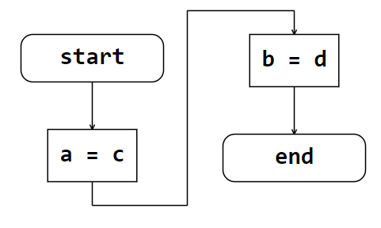
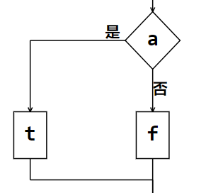
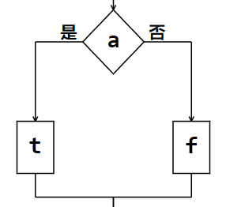
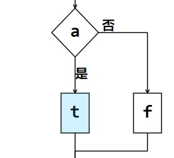
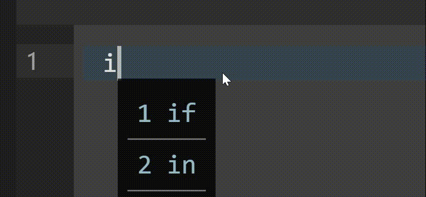
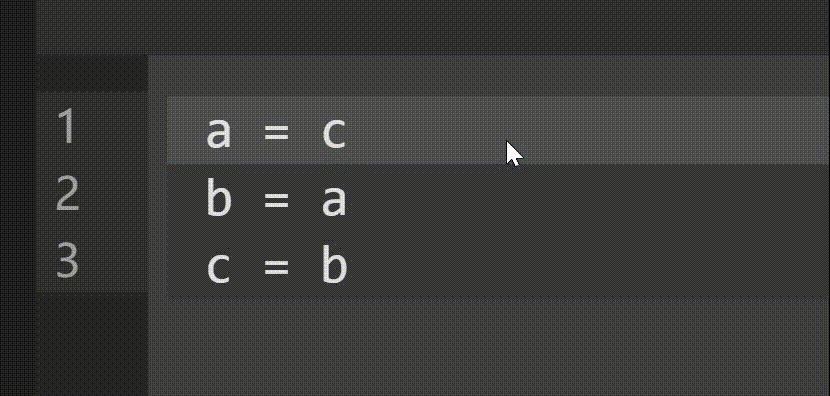

ChartCoder 帮助文档
代码样例
1.如果想要一个动作命令，只需要写一行语句，如果需要多行，请使用do。
2.标签，在语句前写入标签名称并加上冒号
3.判断语句，输入if，括号内写条件，可以只有正确语句块
4.跳转语句，goto后加标签的名称
5.输入输出命令，输入将以平行四边形的输入框显示
6.函数以及文件调用
你可以这样定义一个函数
调用函数
data是你传入的参数，会写在线上
7.转向操作符 turn
后面接的数字是两大块之间的距离

8.调整符，在当前节点后加入;并且书写样式代码
样式代码类型，多个类型使用','分隔
sideType = 0

sideType = 1

sideType = 2

9.代码补全

特殊字符补全
9.行移动
按住行半秒出现黄色边框后即可移动

10.转义
使用反斜杠 \ 对操作符进行转义
11.编辑
在框图的显示范围点击节点可以对流程框图的一些细节进行调整，同样的调整可以在代码中使用样式代码进行实现
对于长度的调整，只需要在相应栏目滚动鼠标滚轮即可
12.注意事项
不支持switch语句
不可以调用自身
在goto语句后面不可以有其他语句
只允许在末尾输出out
out只允许出现在函数中
out前不允许有标签
在主函数中如果要跳到结尾请使用 goto end
请勿在{}[]后紧接着书写代码，请换行书写